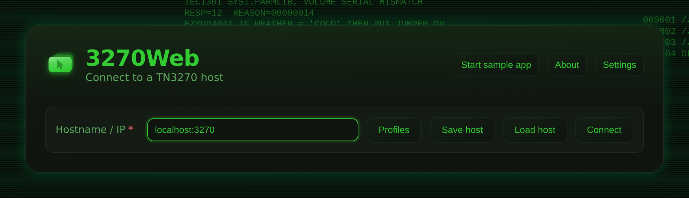
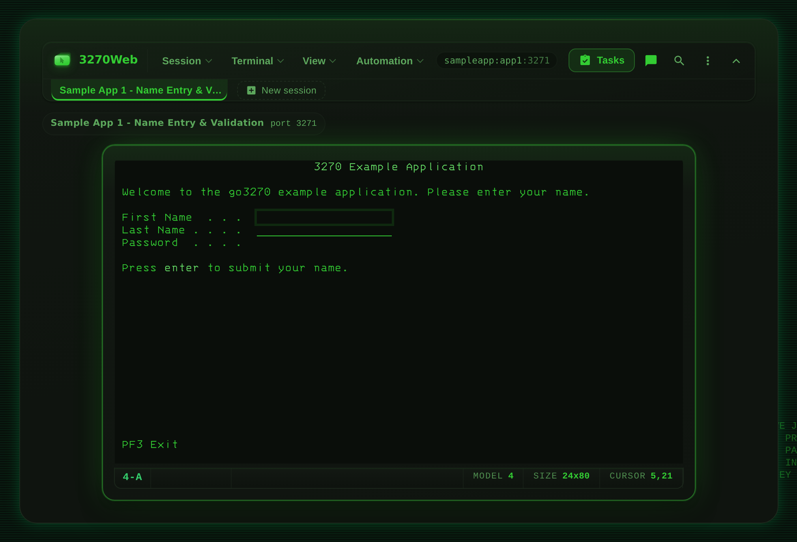
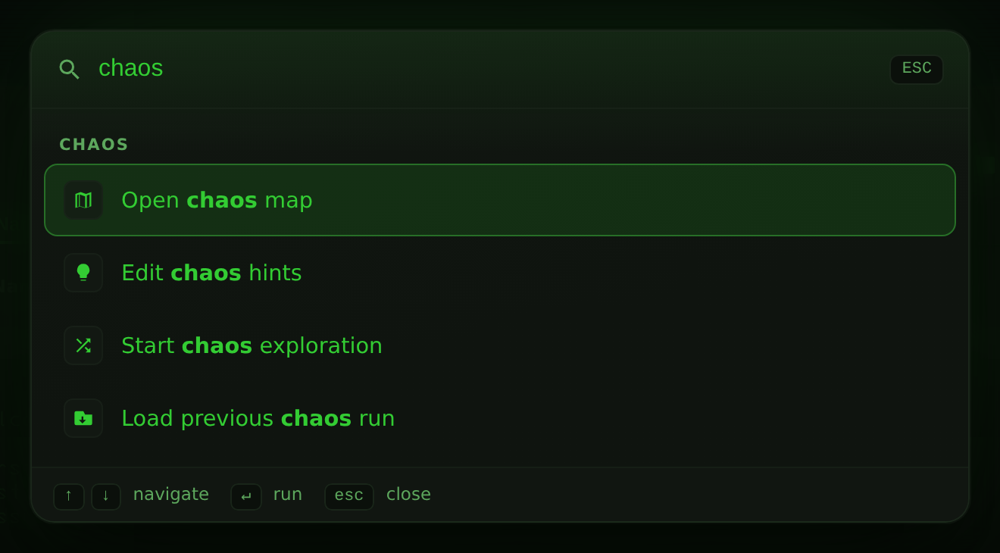
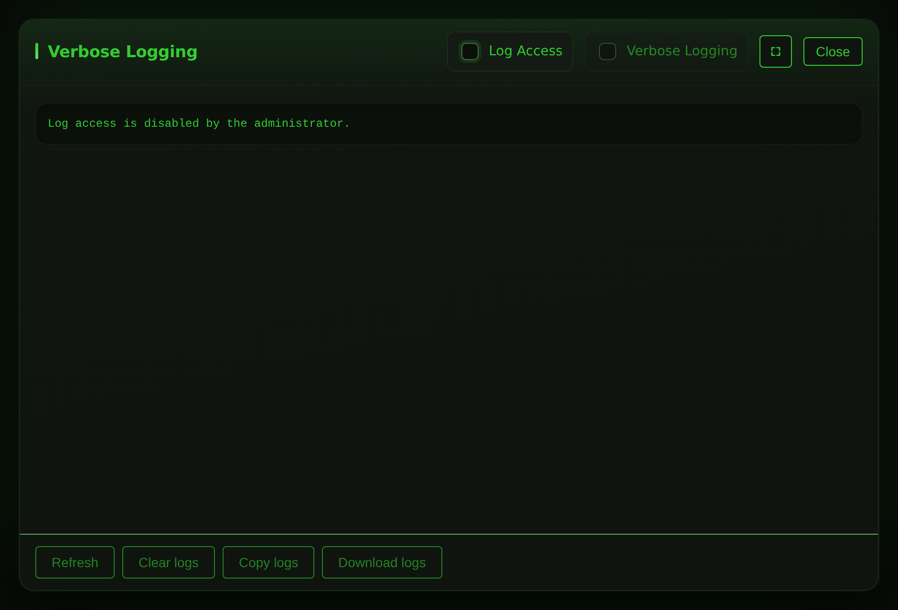
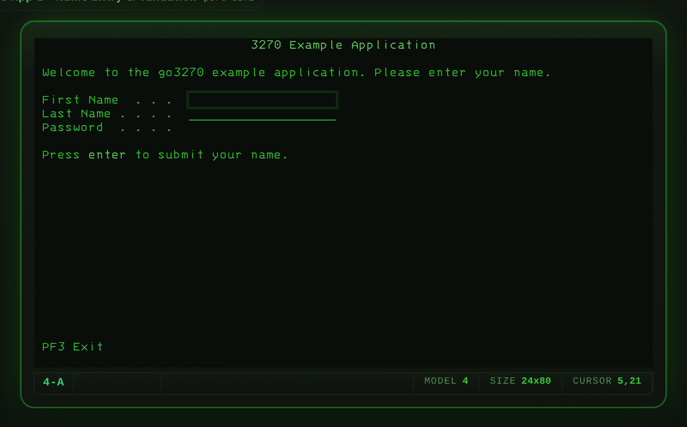

The mainframe, in a browser tab¶
No emulator install. No thick client. Open a tab, connect to any TN3270 host, and work exactly like you would at a real 3270 terminal — then let AI Chat, chaos exploration and workflow recording do the heavy lifting.
$ curl -fsSL https://3270Web.3270.io/install.sh | bash › method binary · docker · compose [ask] › listening http://localhost:3270 [up] › connect mvs.example.com:992 [ok] › negotiate IBM-3278-2-E [tn3270e] › recording 12 actions captured [rec] ›
See It in Action¶
3270Web in under a minute — connect, sign on, work the screens, the command palette, and where the automation lives. Recorded from a live session against the bundled sample application; nothing is mocked.
Eight more short walk-throughs — connecting, recording and replaying a workflow, chaos exploration, themes and fonts, keyboard and keypad, running several hosts at once — live on the Demonstration Videos page.
Feature Highlights¶
-
AI Chat Mode
Drive any 3270 session by typing plain English. The AI reads the current screen, proposes field fills and key presses, and waits for your approval before acting. Toggle Auto Mode to let it run hands-free. Bring your own AI: GitHub Copilot, Claude, OpenAI, Google AI, Ollama, or any OpenAI-compatible endpoint.
-
Chaos Exploration
Auto-discover every navigation path on a host. Chaos mode fills fields with generated values, presses AID keys, and records every screen transition — then exports a reusable workflow JSON ready for load testing with 3270Connect.
-
Workflow Recording & Playback
Capture terminal actions as portable JSON. Replay them with a single click, step through them one action at a time in debug mode, or hand the file to any CI pipeline.
-
REST API
Connect, read screens, submit input, and control chaos runs over HTTP. Wire 3270 sessions into any automation stack — scripts, pipelines, or custom tooling.
-
Host Compatibility Profiler
Probe any TN3270 host and capture its negotiated terminal model, protocol options, capabilities, and timing as a JSON document. Same schema as
3270Connect -profile, so profiles diff cleanly across tools and environments. -
Chaos Mind-Map Compare
Diff two previously-exported chaos mind maps to surface field and transition divergence between hosts — ideal for migration-readiness checks against Rocket Enterprise Server stand-ins.
-
IBM 3270 Terminal Fonts
Three bundled 3270-style web fonts (Regular, Semi-Condensed, Condensed) make the browser session look like a real 3279 display on any platform — no install, no CDN fetch.
-
Command Palette
Press Ctrl+K from anywhere — even mid-keystroke in the terminal — to search every menu and modal action, jump straight to a chaos or recording control, and switch themes without opening Settings.
Screenshots¶




Allow log access is enabled.
First Session¶
- Get 3270Web running — native Linux binary, Docker, or Docker Compose.
- Open 3270Web in your browser (
http://localhost:3270). - Enter your TN3270 host and port on the connect screen. No mainframe? Enter
sampleapp:petstorefor the bundled pet store — a counter, a back office and a command line on every screen. See Bundled Sample Applications. - Use the terminal — keyboard shortcuts, PF keys, and field navigation all work as expected.
- Optional: hit Start recording to capture the session for replay later.
Install and Run Full setup guide
What's in This Guide¶
| Section | What you'll find |
|---|---|
| Demonstration Videos | Short recorded tours — the terminal, recording and replay, chaos, themes, keyboard |
| Install and Run | Run the native Linux binary, Docker image, or Docker Compose |
| User Accounts and Sign-In | Turn on accounts, create the first administrator, manage people |
| Running a Shared Instance | What one account is kept from another, API tokens, host allowlist, rate limits, the audit trail |
| Connect and Use 3270Web | Host configuration, startup options, UI tour |
| Recordings and Playback | Record, load, play, debug, and export workflows |
| Chaos Mode | Automated screen exploration and load-test export |
| AI Chat Mode | Conversational session control |
| AI Providers | Point AI Chat at Copilot, Claude, OpenAI, Google AI, Ollama, or your own endpoint |
| Keyboard and Controls | Full keyboard shortcut reference |
| Screen Size and Model Guide | 3270 model limits and field size rules |
| REST API | Endpoint reference for scripting and CI |
| Host Compatibility Profiler | Probe a host once and capture its CompatibilityProfile JSON for cross-environment comparison |
| Chaos Mind-Map Compare | Diff two exported mind maps to surface divergence between hosts |
| Terminal Fonts | Bundled IBM 3270-style web fonts and how to switch between them |
| Compatibility Profile Schema | Field-by-field reference for the shared profile JSON (v1.0.0) |
| Feature Roadmap | Planned and in-progress features |
| Acknowledgements | s3270 and the x3270 family, whose protocol work 3270Web is built on |
| Licence | What the AGPL asks of a deployment — and what it does not |